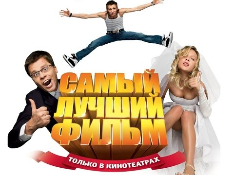
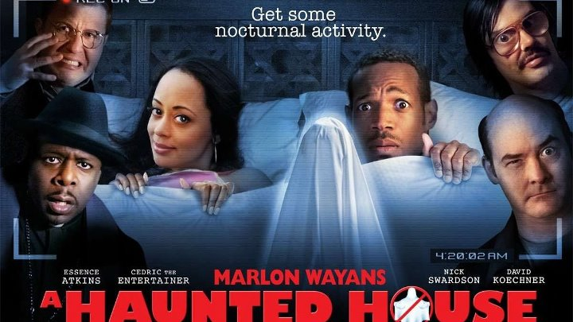

Тест.
Дальше идет достаточно серьезная информация.
Отвечайте максимально правдиво или не отвечайте совсем.
По итогам теста вы узнаете, ✨какой вы фильм-пародия✨
ВНИМАНИЕ! В ходе теста обязательно нажмите на каждую кнопку "Дальше"!
Результат:
Согласно результатам данного теста, вы - "Самый лучший фильм" - пародия на российские фильмы с рейтингом 3.1

Результат:
Вы уже не самый плохой фильм-пародия, вы - "Очень голодные игры", рейтинг 3.4
Результат:
Вы интересный персонаж, вы - "Вампирский засос" с рейтингом 4.1
Результат:
Вы явно выше среднего, с изюминкой, ваш фильм - "Суперфорсаж" с рейтингом 4.6, там еще велосипед взорвался

Результат:
Вы невероятны, уровень вашей неординарности высок, ваш фильм - "Дом с паранормальными явлениями", рейтинг 5.6

Результат:
Планка изюминок вашей личности почти максимален, ваш фильм - "Очень страшное кино", рейтинг 7
Результат:
Потолок достигнут, вы самая интересная личность согласно этомму тесту, ваш фильм - "Не грози южному централу, попивая сок у себя в квартале", рейтинг 7.2
Результат:
Ответь ты на каждый вопрос, тебе сложно что ли